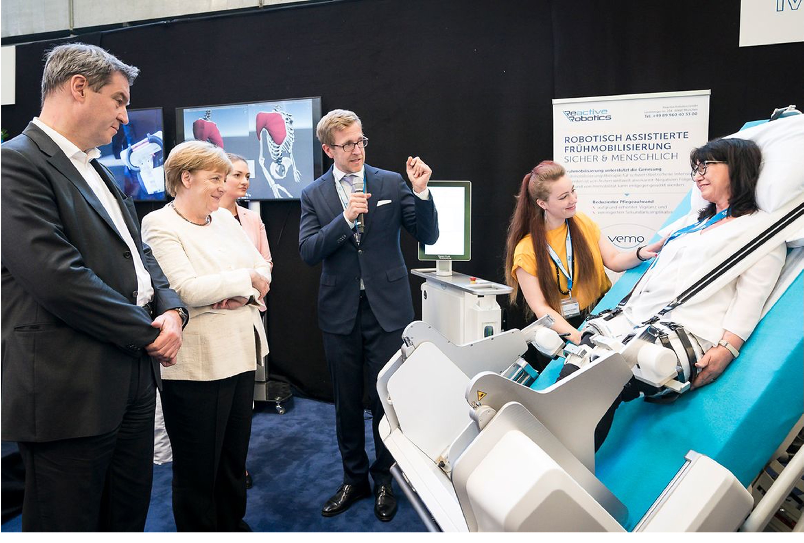
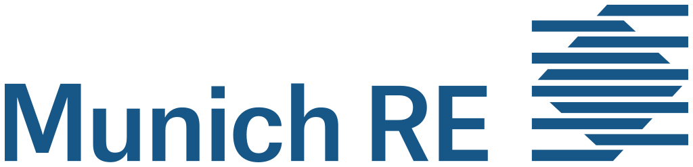

KEYNOTE 01Was ist real.
Was ist real.
Was ist Hype.
Humanoide Roboter und verkörperte KI: Fähigkeiten, Grenzen und der Zeitpunkt wirtschaftlicher Relevanz.
Die nächste Generation Künstlicher Intelligenz sieht, lernt und handelt in der physischen Welt. Verstehen Sie früher, was wirklich kommt.


Persönliche Referenz auf Anfrage verfügbar.
Humanoide Roboter und verkörperte KI: Fähigkeiten, Grenzen und der Zeitpunkt wirtschaftlicher Relevanz.
Was acht Jahre als Gründer und CEO über Technologie, Regulierung, Finanzierung und Skalierung lehren.
Wie Robotik Selbstständigkeit stärkt, Fachkräfte unterstützt und Pflege menschlicher machen kann.
Keynotes, Executive Workshops und Advisory – weltweit verfügbar, mit aktuellem Schwerpunkt auf Deutschland und Europa.
Mehr über Alexander König ›Robotik verständlich. Konsequenzen klar. Entscheidungen fundiert.
Verfügbarkeit anfragen